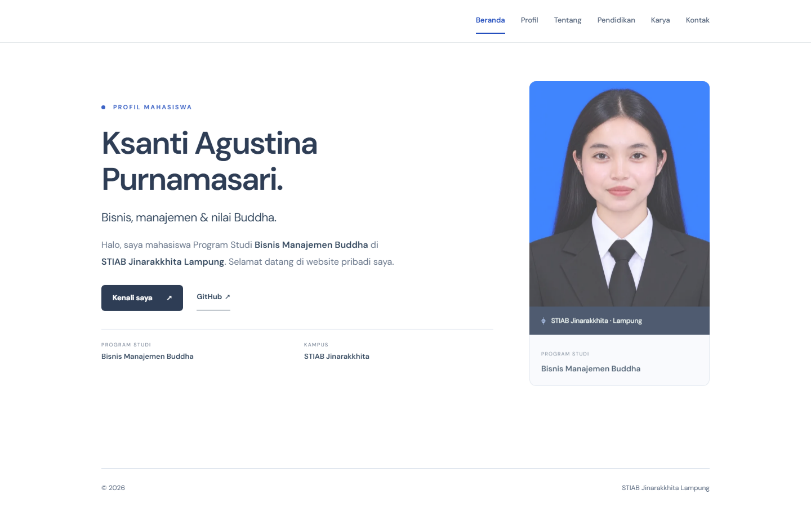
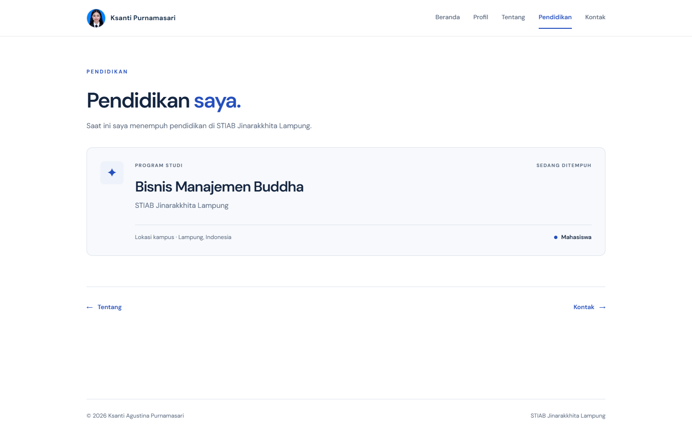

GALERI KARYA
Foto & karya.
Potret pribadi dan cuplikan website biodata saya. Pilih kategori untuk menjelajahi galeri, lalu buka gambar untuk melihatnya lebih jelas.

Potret Ksanti
Foto profil yang digunakan pada halaman Beranda, Profil, dan identitas di menu website.
Kenali saya

Website biodata
Halaman pembuka website pribadi yang memperkenalkan profil, program studi, dan perguruan tinggi saya.
Lihat Beranda

Halaman pendidikan
Bagian website yang merangkum pendidikan saya di Program Studi Bisnis Manajemen Buddha, STIAB Jinarakkhita Lampung.
Lihat Pendidikan